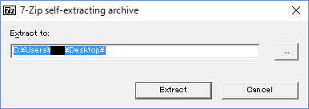

使い方
注意：Vista以降のWindowsでしか動作しません！
1. ダウンロードページのダウンロードボタンをクリックします。
2. 下の画面になるので、ダウンロードをクリックします。
3. ダウンロードした「海城コンピューター部2016」というファイルを起動し、「Extract」を押します。

4. しばらくすると、「海城コンピューター部2016」というフォルダができます。その中に部誌が入っています。
また、「展示用」フォルダの中の「Launcher2016」というファイルを開くと、ゲームがプレイできます。